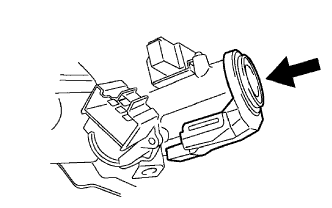

ĐÈN BÁO Ổ KHÓA ĐIỆN > LẮP |
| 1. LẮP BỘ KHUYẾCH ĐẠI CHÌA THU PHÁT |
|  |
Gióng thẳng bộ khuyếch đại với vị trí lắp của giá bắt phía trên.
Hãy ấn bộ khuyếch đai và lắp nó vào giá bắt phía trên.
| 2. LẮP NẮP CHE PHÍA TRÊN TRỤC LÁI |
 |
Lắp nắp che phía dưới bằng 3 vít.
| 3. LẮP NẮP CHE PHÍA DƯỚI TRỤC LÁI |
|
Lắp nắp che phía dưới bằng 3 vít.
| 4. LẮP CỤM VÔ LĂNG |
 |
Gióng thẳng các dấu ghi nhớ trên vô lăng và trục lái chính.
Lắp đai ốc bắt vô lăng.
| 5. ĐẶT CÁC BÁNH TRƯỚC HƯỚNG THẲNG VỀ PHÍA TRƯỚC |
| 6. KIỂM TRA CỤM VÔ LĂNG |
| 7. LẮP CỤM MẶT VÔ LĂNG |
Kiểm tra các vết cắt, nứt hay biến màu trên bề mặt bên ngoài của mặt vôlăng và trong phần rãnh.
Kiểm tra rằng còi kêu.
| 8. NỐI CÁP ÂM ẮC QUY |
| 9. KIỂM TRA CỤM MẶT VÔ LĂNG |
Kiểm tra các vết cắt, nứt hay biến màu trên bề mặt bên ngoài của mặt vôlăng và trong phần rãnh.
Kiểm tra rằng còi kêu.
| 10. TIẾN HÀNH THIẾT LẬP BAN ĐẦU |
Tiến hành thiết lập ban đầu (Xem trang Kích chuột vào đây).
| 11. KIỂM TRA ĐÈN CẢNH BÁO SRS |
Kiểm tra đèn cảnh báo SRS (Xem trang Kích chuột vào đây).